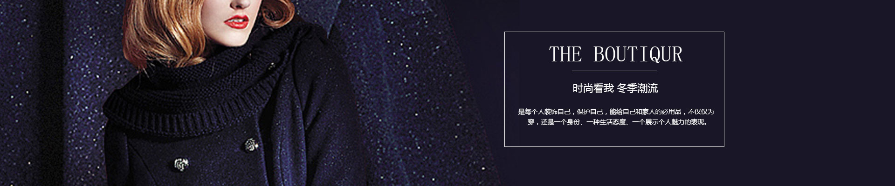
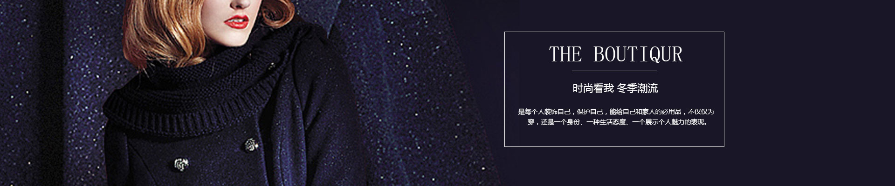

设计团队
设计师刘清扬（Christine Lau），生在北京，长在香港，18岁留学英国，就读于Central Saint Martins Collage(英国圣马丁艺术设计学院)Textile Design（面料设计）专业。出于对服装设计的热爱，毕业后，在做面料设计师的同时，开始自学服装设计。在中西文化结合的生长环境影响下，形成了对设计的独特见解。面料设计的基础更令其在服装设计上有着得天独厚的优势。2009年，24岁的Christine Lau创建Chictopia时装品牌。
Chictopia的设计风格优雅而前卫，注重服装设计的原创精神。设计师将复古元素和现代简约设计巧妙的结合在一起，创造出一种精致并且经典的设计风格。设计师认为面料是影响服装设计的关键所在，因此对面料的运用有着独特的见解，而每一季由设计师亲自操刀设计的另类印花面料，更是品牌的一大特点，令Chictopia的设计在众多时装品牌中显得独一无二。
韩璐璐秉承哲学式留白的创作理念，对设计做减法，为穿着者提供更多的穿搭空间，使她的作品在时尚圈独树一帜。作为极富创造力的时尚设计师，她不拘泥于轻礼服既为酒会小礼服的固有形式，推出了"新式轻礼服"的概念。Hán Lù Lù的礼服之"轻"在于意念轻灵，层次丰富，风格简约，变化多端;设计师韩璐璐将礼服的设计元素自然地融入日常生活的每一天， 用礼服之精致、优雅来渲染生活。看似随意的装扮却经得起推敲，不论场合如何转变，一衣多变的特性总能轻松应对、充满亮点。
她擅长将典雅的东方气质与利落的西式剪裁相融和，强调女性精致、优雅的特质;提倡一衣多变及无季节性的穿搭理念，力求在设计感与实穿性上找到最佳契合点。
出生于1982年，毕业于 Den Haag 服装学院，曾经攻读工业造型设计并在 Amsterdam 自由大学修读荷兰语。2004年被邀请参加在Escape 举办的荷兰新设计师作品发布会，展示男装系列，并在 Amsterdam 开设个人设计专柜，将设计推向市场。同年，在荷中文化节，被邀请作为华人设计师代表展示最新作品。2005年，在 Amsterdam Barbizon Palace 做男装专场发布会，之后任职于 Jeroen van Tuly 公司。于2007年在北京CBD建外SOHO建立设计工作室，同年副线系列分别在上海、北京、南京上市。
2008年瑞典最大的奢侈品商场NK邀请去瑞典做新品发布，并将在其商场出售一线Xander Zhou高级男装系列。Xander Zhou以独特的视觉艺术角度、出众的设计剪裁对男装进行一种新的诠释，他的多元化的市场理念在中国服装界构筑出一个全新的商业模式。
作为中国**的时装设计师之一，罗峥带领自己一手创立的欧柏兰奴OMNIALUO品牌远赴纽约，为堪称时尚与商业完美结合的纽约时装周献上品牌2009春夏时装系列。从此她也成为率领中国女装设计师品牌远征纽约时装周的*人. 罗峥带给国际服装市场的不仅是一个欧柏兰奴，她更是中国众多设计师品牌走向全球服装商业至高点的领头羊。
罗峥立足纽约的一个开始，以后的纽约时装周上,我们或许都可以看到这个优雅的东方身影。已在美国拥有代理商和合作伙伴的欧柏兰奴将会凭借更优秀的作品和更成熟的商业运作模式，在国际时尚舞台翩然起舞。罗峥选择以平常心来面对。不奢求能一炮而红，只期待世界的眼光能从她的设计中看到来自中国的时尚之美。